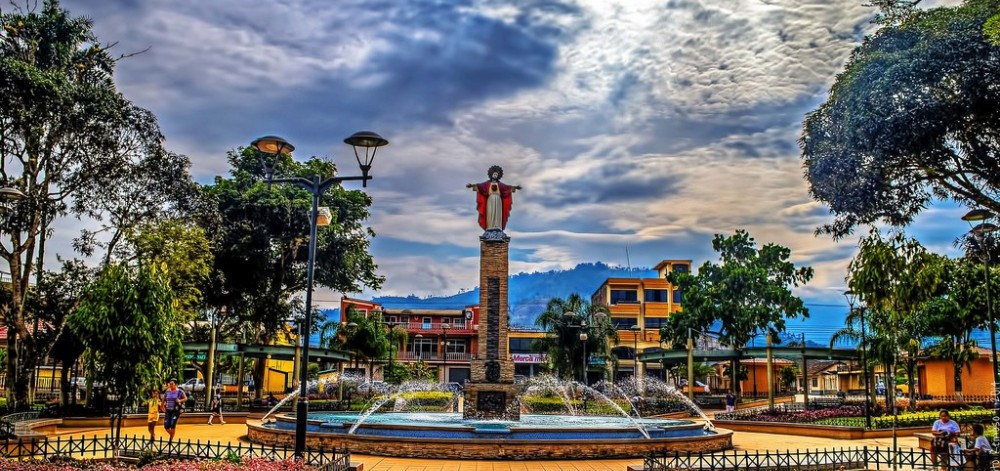

Provincia de Morona Santiago. Es una de las 24 provincias que conforman a Ecuador. Es una provincia de la Amazonía ecuatoriana. Su capital es la ciudad de Macas, la cual además, es su urbe más poblada. Este pueblo es conocido universalmente como reductores de cabeza humana, por su espíritu guerrero, hoy no vigente.
Espesura y selva de verde follaje, misterio y silencio son las características de la amazonía ecuatoriana, que junto a los ríos que son parte de sus vías de desarrollo, dan paso a las típicas canoas de madera para realizar los viajes de aventura, mirando como su gente se dedica a práctica de las actividades que son parte de su vida cotidiana. La selva y sus encantos son sus principales atractivos turísticos. Resulta sumamente emocionante visitar a los grupos étnicos Jíbaros o Shuar. Como atracción importante: La "Cueva de los Tayos", El Parque Nacional Sangay, El Pan de Azúcar y El Kutuku. Las características geográficas de los territorios de esta provincia oriental son muy diferentes a los de otras regiones, pues desde la cordillera andina presenta una separación del ramal montañoso de Cutucú, el mismo que para muchos geógrafos se constituye en una tercera cordillera, separada de la oriental por el río Upano que la recorre de norte a sur; otra de sus particularidades es la presencia del volcán Sangay, que hasta hace muy poco tiempo fue uno de los más activos del mundo.